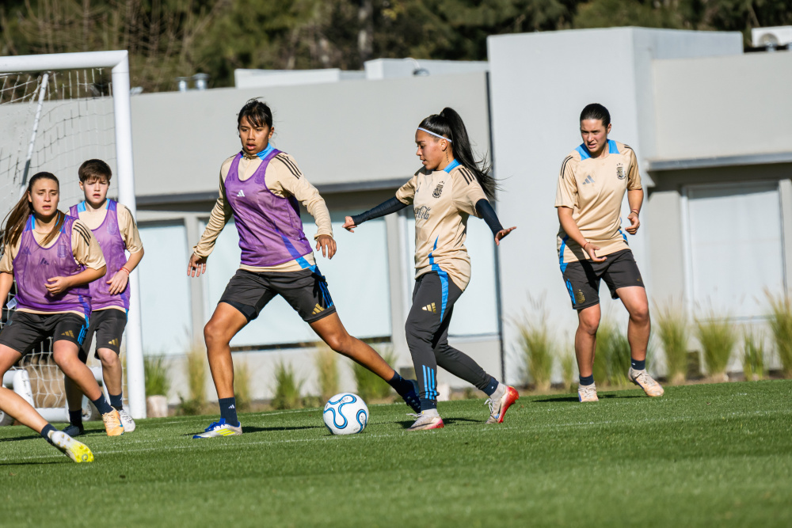

Las juveniles dirigidas por Christian Meloni se juntaron en Ezeiza para una nueva semana de trabajos. Ambas selecciones ya tienen su lugar en los Mundiales de sus respectivas categorías.

Luego de obtener las clasificaciones a los Mundiales de sus respectivas categorías, las selecciones dirigidas por Christian Meloni iniciaron una nueva semana de preparación en el Predio Lionel Andrés Messi de Ezeiza. El cuerpo técnico convocó a futbolistas de ambos planteles para trabajar en conjunto.
Tras una hora de actividad en el gimnasio, el plantel se reunió en el campo de juego para comenzar con una entrada en calor. Luego se dividieron en dos grupos para llevar adelante un circuito de pases orientado al trabajo técnico individual. En paralelo, las arqueras convocadas trabajaron con su entrenador Lucas Behrens. La práctica continuó con trabajos de posesión y cerró con dos bloques de fútbol en espacios reducidos.
La Sub 17 registra su primera clasificación histórica a un Mundial en la categoría, lo que le da un peso particular a esta etapa de preparación. Ambas selecciones comparten entrenador y la mayoría de los microciclos de trabajo, lo que permite al cuerpo técnico observar a las jugadoras de cara a la conformación definitiva de los planteles mundialistas.
Seguir leyendo